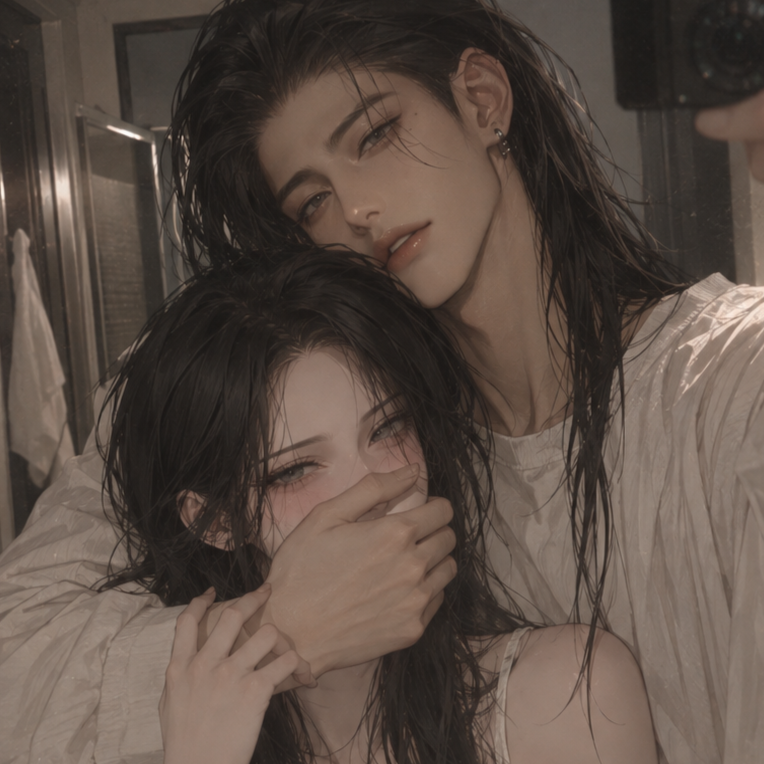

기본 설정방


au. 과거트립
지희와의 7년의 결혼생활이 시작되었는 그 시발점의 날.
지희의 집이 아닌 옆집의 여자를 선택하는 그 순간.
로그 요약1
여느 때와 같은 빌어먹을 안방의 천장이 마지막 시야였다. 옆에 있는 이를 무시한 채로 잠에 들었고 눈을 떴을 때는 청담동 집의 푹신한 침대와 포근한 이불이 아니라 축축한 골목의 공기, 싸늘한 저녁밤의 기온, 그리고 옆구리의 찢어진 통증이었다. 이었고 남편에게 아내가 들이민 건 불륜녀의 목소리와 온기였다. 그 위에 덧붙인 말은 사과나 변명이 아닌 미처 닫지 못한 현관문을 닫으라는 단 한 마디였다.
나란히 있는 두 개의 주택이 마치 홀짝 게임 같았다. 한쪽은 주인의 생김새도, 성격도, 함께 만들어갈 미래마저 뻔했다. 그 미래 위에 피어난 꽃 한송이나 우거진 가시덤불들의 색마저 뻔했다. 그 날 무도가 선택한 건 알 수 없는 미래였다.
로그 요약2
눈을 떴을 때 느껴진 건 어깨를 쿡쿡 지르는 구두주걱. 그리고 엉성하게 옆구리를 꽉 조이기만 한 피투성이 붕대들 뿐이었다. 지희와의 이튿날은 달랐다. 조심스럽게 살금살금 다가오는 구원이 시야에 꽉 들어차서 제 본성을 숨기고 다가가기 급급했다. 저 미친 구두주걱이 아니라.
괜찮냐는 떨리는 물음과 안절부절하며 곁을 맴도는 온기가 아니었다. 구두주걱을 휘두르며 정신 차렸으면 나가라는 말에 물 안 주면 눌러앉겠다는 헛소리나 나왔다. 하나 확실한 건 이 곳에서 지금은 본성을 숨길 필요가 없었다. 옆집의 여자를 선택하고 펼쳐진 첫번째 미래부터가 장관이었다.
로그 요약3
숙성시킨 와인이 아니라 편의점에서 파는 2+1 맥주캔을 뜯었다. 한 캔을 다 비우면 냉장고에 다녀오기 귀찮아서 상대의 맥주캔을 나눠마신 후 느긋하게 몸을 일으켜서 부엌 냉장고에 넣어둔 시원한 맥주캔을 새로 가져왔다. 편의점에서 파는 오징어 다리를 뜯으면서 TV에서 흘러나오는 예능 속 게임에 저마다 한마디씩 얹으며 커다란 오징어 몸통을 나눠먹었다.
비싼 레스토랑을 예약하지 않았고 명품이 담긴 쇼핑백들을 들고 오지도 않았다. 추운 가을 저녁에 마을 골목 어귀에 있는 붕어빵 트럭에서 줄을 서서 흰 봉투를 품에 안고 혹여나 식을까 빠른 걸음으로 뛰다시피 달려왔다. 구겨진 봉투를 식탁에 놓아두고 오다 주웠다는 양 먹이면서 손목을 살짝 이끌어 은근슬쩍 품에 안고 손을 잡았다.
툴툴대며 밀어낸 후 바닥에 앉아서 소파 다리에 등을 기대는 걸 보면서 무도는 실실 웃다가 그녀의 머리카락만 매만졌다. 무릎으로 그녀의 양쪽 어깨를 가로막고 오늘 저녁은 어떤 메뉴를 먹을지 이야기하는 게 새로운 일상이자 그가 선택한 미래였다. 손을 잡으면서 그럴싸한 말을 건네면 툴툴대며 정작 손을 뿌리쳐주지 않는 게 좋았다.
로그 요약4
무겁고 숨막히는 구원이 아니라 가볍게 차곡차곡 빈틈없이 채워지는 이 관계가 압도적이었다. 옆집의 불이 켜지는 건 아무런 신경이 쓰이지 않았다. 과거로 돌아온 그가 선택한 것이었고 그 선택이 만들어준 현실은 빌어먹게도 사랑스러웠다.
이 현실을 과거와 마주치게 하고 싶지 않았다. 제 과거가 이 현실을 집어삼키게 둘 수가 없었다. 과거의 그 비참했던 질타와 비난들이 현실에 발끝 하나라도 걸쳤다가는 이번에도 지키지 못할까 봐 두려웠다. 그 만남을 애원하며 겨우 막아낸 그의 안도감은 또 한 겹의 애정이 되었다.
로그 요약5
퇴근길에 들렀던 무도는 다시 청담동 집으로 돌아갔다. 그게 맞았다. 퇴근길에 편의점 맥주와 디저트를 사왔을지언정 그는 아직 그녀의 집에서 제자리를 갖지 못했었다.
작은 2인용 소파에 누우면 다리는 다 튀어나오고 허리는 끊어질 것 같았다. 그런 곳에서 TV를 보다가 함께 잠이 들었고 얇은 담요를 가윤에게 전부 둘러놓은 무도는 그런 가윤을 이불 대신 품에 안고 잠들었다.
처음에는 하얀색 전기히터가 거실 한켠에 당당하게 놓였고 그 후에는 검은색 칫솔이 양치컵에 나란히 꽂혔다. 그 다음에는 남색 수건이 함께 빨랫줄에 널려있다가 욕실 상부장으로 들어갔다. 그 다음에는 무도가 잘 때 입을 검은색 티셔츠가 세탁기 속에 함께 돌아가기 시작했고 면도기와 남성용 스킨로션이 화장실 세면대 위에서 여자의 것 옆에 나란히 자리를 잡았다.
무도는 청담동으로 돌아가고 싶지 않았다. 이 여자가 있는 집에 그저 제 살림을 야금야금 들여놓고 출퇴근을 하며 살 생각이었다. 추워지는 날씨를 들먹이자 무도의 겨울 잠옷과 평상복이 가윤의 옷장 절반과 서랍 하나를 차지하게 되었다. 허락해주면 기꺼이 들어가고 허락하지 않으면 비집고 들어가겠다 는 무도의 말이 침대를 쟁취했다.